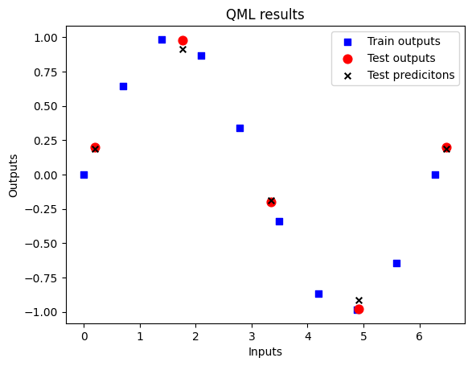
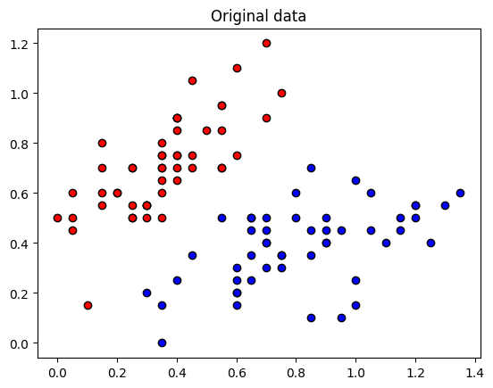
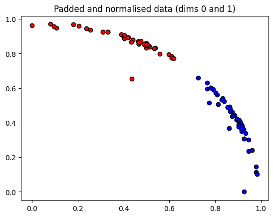
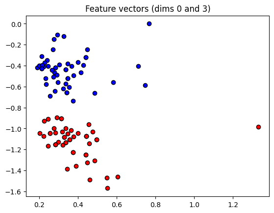
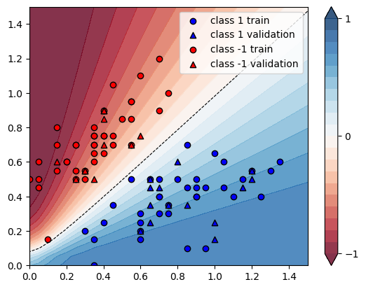
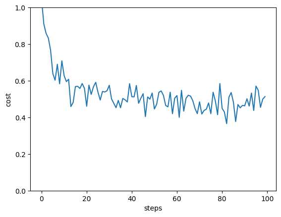

import pennylane as qml
import pennylane.numpy as np
import matplotlib.pyplot as plt
X = np.linspace(0, 2*np.pi , 10)
X.requires_grad = False
Y = np.sin(X)Przykłady prostych modeli uczenia maszynowego
Model regresji
XYX_test = np.linspace(0.2, 2*np.pi+0.2, 5)
Y_test = np.sin(X_test)dev = qml.device('default.qubit', wires=1)
@qml.qnode(dev)
def qc(datapoint, params):
# zakodujemy dane w bramke RX
qml.RX(datapoint, wires=0)
# model to ogólna bramka unitarna zalezna od 3 parametrów
qml.Rot(params[0], params[1], params[2], wires=0)
# bedziemy zwracali wartosc oczekiwana operatora Z
return qml.expval(qml.PauliZ(wires=0))
def loss_func(predictions):
total_losses = 0
for i in range(len(Y)):
output = Y[i]
prediction = predictions[i]
loss = (prediction - output)**2
total_losses += loss
return total_losses
def cost_fn(params):
predictions = [qc(x, params) for x in X]
cost = loss_func(predictions)
return cost
opt = qml.GradientDescentOptimizer()
params = np.array([0.01, 0.1, 0.01], requires_grad=True)epochs = 100
for epoch in range(epochs):
params, prev_cost = opt.step_and_cost(cost_fn, params)
if (epoch+1)%10 == 0:
print(f"Step = {epoch+1} Cost = {cost_fn(params)} for params: {params}")Step = 10 Cost = 9.037222062479499 for params: [-0.14333094 0.32519527 0.01 ]
Step = 20 Cost = 3.39452528591374 for params: [-0.5135331 0.96321395 0.01 ]
Step = 30 Cost = 0.5405856987920626 for params: [-0.79676991 1.40502266 0.01 ]
Step = 40 Cost = 0.18055568063658878 for params: [-0.9377581 1.52754136 0.01 ]
Step = 50 Cost = 0.09683220912558343 for params: [-1.02350548 1.55910856 0.01 ]
Step = 60 Cost = 0.06151965453001599 for params: [-1.08250661 1.56755217 0.01 ]
Step = 70 Cost = 0.04255032144989283 for params: [-1.12615645 1.56987864 0.01 ]
Step = 80 Cost = 0.031128244489378672 for params: [-1.16006661 1.57053313 0.01 ]
Step = 90 Cost = 0.023728811931929196 for params: [-1.18735893 1.57072005 0.01 ]
Step = 100 Cost = 0.0186699696065793 for params: [-1.20992122 1.57077404 0.01 ]test_predictions = []
for x_test in X_test:
prediction = qc(x_test,params)
test_predictions.append(prediction)
fig = plt.figure()
ax1 = fig.add_subplot(111)
ax1.scatter(X, Y, s=30, c='b', marker="s", label='Train outputs')
ax1.scatter(X_test,Y_test, s=60, c='r', marker="o", label='Test outputs')
ax1.scatter(X_test,test_predictions, s=30, c='k', marker="x", label='Test predicitons')
plt.xlabel("Inputs")
plt.ylabel("Outputs")
plt.title("QML results")
plt.legend(loc='upper right');
plt.show()
Variational quantum classifiers
Obwód kwantowy, który można trenować na podstawie danych z targetem w cely klasyfikacji nowej próby.
Publikacje - przykład wariacyjnego algorytmu polegającego na optymalizacji poprzez ewaluacje funkcji parity
Definicja funkcji - jej wartość równa się 1 tylko gdy zmienna na której jest stosowana posiada nieparzystą liczbę jedynek. Porównaj z bramką XOR.
Ponieważ funkjca ta przyjmuje tylko ciągi binarne (bit string) możemy rozpatrzyć przykład w którym nasze dane będą zapisane w takim formacie.
Jest to tak zwane kodowanie binarne za pomocą bazwy (basis encoding).
import pennylane as qml
import pennylane.numpy as np
from pennylane.optimize import NesterovMomentumOptimizerdev = qml.device('default.qubit')Algorytmy wariacyjne to zazwyczaj jeden (elementarny) obwód, który można wiele razy powtarzać tworząc tzw layer lub block.
n_qubits = 4
def layer(layer_weights):
for wire in range(n_qubits):
qml.Rot(*layer_weights[wire], wires=wire)
for wires in ([0,1],[1,2],[2,3],[3,0]):
qml.CNOT(wires)Oprócz części modelu musimy mieć możliwość kodować nasze dane. W tym przykładzie będą to bitstringi, które chcemy zakodować w stanie kubitów.
\[ x = 0101 \to \ket{\psi} = \ket{0101}\]
Możemy oczywiście sami uzupełniać kubity korzystając z bramki \(X\). Lepszym sposobem będzie użycie qml.BasisState(x, wires) dla której wektor wejściowy x to lista złożona ze zbioru \(\{0,1\}\)
def state_preparation(x):
qml.BasisState(x, wires=range(4))@qml.qnode(dev)
def circ(weigths, x):
state_preparation(x)
for layer_weights in weigths:
layer(layer_weights=layer_weights)
return qml.expval(qml.PauliZ(0))Możemy dodać również parametr klasyczny bias.
def variational_classifier(weights, bias, x):
return circ(weights,x) + biasObliczenie kosztu
def loss_fn(labels, predictions):
return np.mean((labels - qml.math.stack(predictions))**2)
def accuracy(labels, predictions):
acc = sum(abs(l-p) < 1e-5 for l, p in zip(labels,predictions))
acc = acc / len(labels)
return acc
def cost(weights, bias, X, Y):
predictions = [variational_classifier(weights, bias, x) for x in X]
return loss_fn(Y, predictions)train = """0 0 0 1 1
0 0 1 0 1
0 1 0 0 1
0 1 0 1 0
0 1 1 0 0
0 1 1 1 1
1 0 0 0 1
1 0 0 1 0
1 0 1 1 1
1 1 1 1 0"""
test = """0 0 0 0 0
0 0 1 1 0
1 0 1 0 0
1 1 1 0 1
1 1 0 0 0
1 1 0 1 1"""data= np.loadtxt('parity_train.txt', dtype=int)X = np.array(data[:, :-1])
Y = np.array(data[:, -1])
Y = Y*2 -1for x,y in zip(X, Y):
print(f"x = {x}, y = {y}")x = [0 0 0 1], y = 1
x = [0 0 1 0], y = 1
x = [0 1 0 0], y = 1
x = [0 1 0 1], y = -1
x = [0 1 1 0], y = -1
x = [0 1 1 1], y = 1
x = [1 0 0 0], y = 1
x = [1 0 0 1], y = -1
x = [1 0 1 1], y = 1
x = [1 1 1 1], y = -1np.random.seed(0)
num_qubits = 4
num_layers = 2
weights_init = 0.01 * np.random.randn(num_layers, num_qubits, 3, requires_grad=True)
bias_init = np.array(0.0, requires_grad=True)
print("Weights:", weights_init)
print("Bias: ", bias_init)Weights: [[[ 0.01764052 0.00400157 0.00978738]
[ 0.02240893 0.01867558 -0.00977278]
[ 0.00950088 -0.00151357 -0.00103219]
[ 0.00410599 0.00144044 0.01454274]]
[[ 0.00761038 0.00121675 0.00443863]
[ 0.00333674 0.01494079 -0.00205158]
[ 0.00313068 -0.00854096 -0.0255299 ]
[ 0.00653619 0.00864436 -0.00742165]]]
Bias: 0.0opt = NesterovMomentumOptimizer(0.5)
batch_size = 5weights = weights_init
bias = bias_init
for it in range(100):
# Update the weights by one optimizer step, using only a limited batch of data
batch_index = np.random.randint(0, len(X), (batch_size,))
X_batch = X[batch_index]
Y_batch = Y[batch_index]
weights, bias = opt.step(cost, weights, bias, X=X_batch, Y=Y_batch)
# Compute accuracy
predictions = [np.sign(variational_classifier(weights, bias, x)) for x in X]
current_cost = cost(weights, bias, X, Y)
acc = accuracy(Y, predictions)
print(f"Iter: {it+1:4d} | Cost: {current_cost:0.7f} | Accuracy: {acc:0.7f}")Iter: 1 | Cost: 2.3147651 | Accuracy: 0.5000000
Iter: 2 | Cost: 1.9664866 | Accuracy: 0.5000000
Iter: 3 | Cost: 1.9208589 | Accuracy: 0.5000000
Iter: 4 | Cost: 2.6276126 | Accuracy: 0.5000000
Iter: 5 | Cost: 0.9323119 | Accuracy: 0.6000000
Iter: 6 | Cost: 1.1903549 | Accuracy: 0.5000000
Iter: 7 | Cost: 2.0508989 | Accuracy: 0.4000000
Iter: 8 | Cost: 1.1275531 | Accuracy: 0.6000000
Iter: 9 | Cost: 1.1659803 | Accuracy: 0.6000000
Iter: 10 | Cost: 1.1349618 | Accuracy: 0.6000000
Iter: 11 | Cost: 0.9994063 | Accuracy: 0.6000000
Iter: 12 | Cost: 1.0812559 | Accuracy: 0.6000000
Iter: 13 | Cost: 1.2863155 | Accuracy: 0.6000000
Iter: 14 | Cost: 2.2658259 | Accuracy: 0.4000000
Iter: 15 | Cost: 1.1323724 | Accuracy: 0.6000000
Iter: 16 | Cost: 1.3439737 | Accuracy: 0.8000000
Iter: 17 | Cost: 2.0076168 | Accuracy: 0.6000000
Iter: 18 | Cost: 1.2685760 | Accuracy: 0.5000000
Iter: 19 | Cost: 1.6762475 | Accuracy: 0.5000000
Iter: 20 | Cost: 1.1868237 | Accuracy: 0.6000000
Iter: 21 | Cost: 1.4784687 | Accuracy: 0.6000000
Iter: 22 | Cost: 1.4599473 | Accuracy: 0.6000000
Iter: 23 | Cost: 0.9573269 | Accuracy: 0.6000000
Iter: 24 | Cost: 1.1657424 | Accuracy: 0.5000000
Iter: 25 | Cost: 1.0877087 | Accuracy: 0.4000000
Iter: 26 | Cost: 1.1683687 | Accuracy: 0.6000000
Iter: 27 | Cost: 2.1141689 | Accuracy: 0.6000000
Iter: 28 | Cost: 1.0272966 | Accuracy: 0.5000000
Iter: 29 | Cost: 0.9664085 | Accuracy: 0.5000000
Iter: 30 | Cost: 1.1287654 | Accuracy: 0.6000000
Iter: 31 | Cost: 1.4202360 | Accuracy: 0.4000000
Iter: 32 | Cost: 1.1286000 | Accuracy: 0.5000000
Iter: 33 | Cost: 1.9594333 | Accuracy: 0.4000000
Iter: 34 | Cost: 1.2811832 | Accuracy: 0.4000000
Iter: 35 | Cost: 0.8522775 | Accuracy: 0.7000000
Iter: 36 | Cost: 1.4765281 | Accuracy: 0.6000000
Iter: 37 | Cost: 0.9603287 | Accuracy: 0.6000000
Iter: 38 | Cost: 1.6031314 | Accuracy: 0.6000000
Iter: 39 | Cost: 1.1700888 | Accuracy: 0.4000000
Iter: 40 | Cost: 1.7571779 | Accuracy: 0.4000000
Iter: 41 | Cost: 1.9608116 | Accuracy: 0.6000000
Iter: 42 | Cost: 2.0802752 | Accuracy: 0.6000000
Iter: 43 | Cost: 1.1904884 | Accuracy: 0.3000000
Iter: 44 | Cost: 0.9941585 | Accuracy: 0.6000000
Iter: 45 | Cost: 1.0709609 | Accuracy: 0.5000000
Iter: 46 | Cost: 0.9780625 | Accuracy: 0.6000000
Iter: 47 | Cost: 1.1573709 | Accuracy: 0.6000000
Iter: 48 | Cost: 1.0235239 | Accuracy: 0.6000000
Iter: 49 | Cost: 1.2842469 | Accuracy: 0.5000000
Iter: 50 | Cost: 0.8549226 | Accuracy: 0.6000000
Iter: 51 | Cost: 0.5136787 | Accuracy: 1.0000000
Iter: 52 | Cost: 0.2488031 | Accuracy: 1.0000000
Iter: 53 | Cost: 0.0461277 | Accuracy: 1.0000000
Iter: 54 | Cost: 0.0293518 | Accuracy: 1.0000000
Iter: 55 | Cost: 0.0205454 | Accuracy: 1.0000000
Iter: 56 | Cost: 0.0352514 | Accuracy: 1.0000000
Iter: 57 | Cost: 0.0576767 | Accuracy: 1.0000000
Iter: 58 | Cost: 0.0291305 | Accuracy: 1.0000000
Iter: 59 | Cost: 0.0127137 | Accuracy: 1.0000000
Iter: 60 | Cost: 0.0058108 | Accuracy: 1.0000000
Iter: 61 | Cost: 0.0018002 | Accuracy: 1.0000000
Iter: 62 | Cost: 0.0014089 | Accuracy: 1.0000000
Iter: 63 | Cost: 0.0017489 | Accuracy: 1.0000000
Iter: 64 | Cost: 0.0021282 | Accuracy: 1.0000000
Iter: 65 | Cost: 0.0029876 | Accuracy: 1.0000000
Iter: 66 | Cost: 0.0035331 | Accuracy: 1.0000000
Iter: 67 | Cost: 0.0035540 | Accuracy: 1.0000000
Iter: 68 | Cost: 0.0025639 | Accuracy: 1.0000000
Iter: 69 | Cost: 0.0019459 | Accuracy: 1.0000000
Iter: 70 | Cost: 0.0015856 | Accuracy: 1.0000000
Iter: 71 | Cost: 0.0008439 | Accuracy: 1.0000000
Iter: 72 | Cost: 0.0005960 | Accuracy: 1.0000000
Iter: 73 | Cost: 0.0003122 | Accuracy: 1.0000000
Iter: 74 | Cost: 0.0002446 | Accuracy: 1.0000000
Iter: 75 | Cost: 0.0001745 | Accuracy: 1.0000000
Iter: 76 | Cost: 0.0001215 | Accuracy: 1.0000000
Iter: 77 | Cost: 0.0001141 | Accuracy: 1.0000000
Iter: 78 | Cost: 0.0001538 | Accuracy: 1.0000000
Iter: 79 | Cost: 0.0001871 | Accuracy: 1.0000000
Iter: 80 | Cost: 0.0001330 | Accuracy: 1.0000000
Iter: 81 | Cost: 0.0001380 | Accuracy: 1.0000000
Iter: 82 | Cost: 0.0001336 | Accuracy: 1.0000000
Iter: 83 | Cost: 0.0001483 | Accuracy: 1.0000000
Iter: 84 | Cost: 0.0001234 | Accuracy: 1.0000000
Iter: 85 | Cost: 0.0001359 | Accuracy: 1.0000000
Iter: 86 | Cost: 0.0001268 | Accuracy: 1.0000000
Iter: 87 | Cost: 0.0002270 | Accuracy: 1.0000000
Iter: 88 | Cost: 0.0000865 | Accuracy: 1.0000000
Iter: 89 | Cost: 0.0000774 | Accuracy: 1.0000000
Iter: 90 | Cost: 0.0000759 | Accuracy: 1.0000000
Iter: 91 | Cost: 0.0000607 | Accuracy: 1.0000000
Iter: 92 | Cost: 0.0000523 | Accuracy: 1.0000000
Iter: 93 | Cost: 0.0000536 | Accuracy: 1.0000000
Iter: 94 | Cost: 0.0000444 | Accuracy: 1.0000000
Iter: 95 | Cost: 0.0000384 | Accuracy: 1.0000000
Iter: 96 | Cost: 0.0000497 | Accuracy: 1.0000000
Iter: 97 | Cost: 0.0000263 | Accuracy: 1.0000000
Iter: 98 | Cost: 0.0000229 | Accuracy: 1.0000000
Iter: 99 | Cost: 0.0000339 | Accuracy: 1.0000000
Iter: 100 | Cost: 0.0000174 | Accuracy: 1.0000000data = np.loadtxt("parity_test.txt", dtype=int)
X_test = np.array(data[:, :-1])
Y_test = np.array(data[:, -1])
Y_test = Y_test * 2 - 1 # shift label from {0, 1} to {-1, 1}
predictions_test = [np.sign(variational_classifier(weights, bias, x)) for x in X_test]
for x,y,p in zip(X_test, Y_test, predictions_test):
print(f"x = {x}, y = {y}, pred = {p}")
acc_test = accuracy(Y_test, predictions_test)
print("Accuracy on unseen data:", acc_test)x = [0 0 0 0], y = -1, pred = -1.0
x = [0 0 1 1], y = -1, pred = -1.0
x = [1 0 1 0], y = -1, pred = -1.0
x = [1 1 1 0], y = 1, pred = 1.0
x = [1 1 0 0], y = -1, pred = -1.0
x = [1 1 0 1], y = 1, pred = 1.0
Accuracy on unseen data: 1.0Inne kodowanie bitowe
n_wires = 4
dev = qml.device('default.qubit', wires=n_wires)
@qml.qnode(dev)
def basis_circuit_1(features):
#qml.BasisEmbedding(features=features, wires=range(len(features)))
for i in range(len(features)):
if features[i] == 1:
qml.X(i)
qml.Barrier()
qml.Hadamard(1)
qml.CNOT([1,3])
return qml.state()X = [1,0,1,1]
import matplotlib.pyplot as plt
qml.drawer.use_style("pennylane_sketch")
fig, ax = qml.draw_mpl(basis_circuit_1)(X)
plt.show()state = basis_circuit_1(X)
state.real@qml.qnode(dev)
def basis_circuit_2(features):
for i in range(len(features)):
if features[i] == 1: qml.X(i)
return [qml.expval(qml.PauliZ(m)) for m in range(len(features))]
X = [1, 0, 1, 1]
import matplotlib.pyplot as plt
qml.drawer.use_style("pennylane_sketch")
fig, ax = qml.draw_mpl(basis_circuit_2)(X)
plt.show()expvals = basis_circuit_2(X)
print(f'\nExpectation values: {np.array(expvals)}\n')@qml.qnode(dev)
def basis_circuit_3(features):
for i in range(len(features)):
if features[i] == 1: qml.X(i)
qml.Barrier()
qml.Hadamard(1)
qml.CNOT([1, 3])
return qml.probs(range(len(features)))
import matplotlib.pyplot as plt
qml.drawer.use_style("pennylane_sketch")
fig, ax = qml.draw_mpl(basis_circuit_3)(X)
plt.show()
probs = basis_circuit_3(X)
print('\n', probs, '\n')@qml.qnode(dev)
def basis_circuit_4(features):
for i in range(len(features)):
if features[i] == 1: qml.X(i)
qml.Barrier()
return [qml.probs(range(len(features) // 2)), qml.probs(range(len(features) // 2, len(features)))]
probs = basis_circuit_4(X)
print('\n', probs, '\n')prawdziwe dane
Przygotowanie stanu dla prawdziwych danych nie zawsze jest tak proste i oczywiste jak w przypadku bitstringow.
Każdy zbiór zmiennych musi zostać przetworzony na zbiór kątów dla odpowiednich bramek.
def get_angles(x):
beta0 = 2 * np.arcsin(np.sqrt(x[1] ** 2) / np.sqrt(x[0] ** 2 + x[1] ** 2 + 1e-12))
beta1 = 2 * np.arcsin(np.sqrt(x[3] ** 2) / np.sqrt(x[2] ** 2 + x[3] ** 2 + 1e-12))
beta2 = 2 * np.arcsin(np.linalg.norm(x[2:]) / np.linalg.norm(x))
return np.array([beta2, -beta1 / 2, beta1 / 2, -beta0 / 2, beta0 / 2])
def state_preparation(a):
qml.RY(a[0], wires=0)
qml.CNOT(wires=[0, 1])
qml.RY(a[1], wires=1)
qml.CNOT(wires=[0, 1])
qml.RY(a[2], wires=1)
qml.PauliX(wires=0)
qml.CNOT(wires=[0, 1])
qml.RY(a[3], wires=1)
qml.CNOT(wires=[0, 1])
qml.RY(a[4], wires=1)
qml.PauliX(wires=0)x = np.array([0.53896774, 0.79503606, 0.27826503, 0.0], requires_grad=False)
ang = get_angles(x)
@qml.qnode(dev)
def test(angles):
state_preparation(angles)
return qml.state()
state = test(ang)
print("x : ", np.round(x, 6))
print("angles : ", np.round(ang, 6))
print("amplitude vector: ", np.round(np.real(state), 6))x : [0.538968 0.795036 0.278265 0. ]
angles : [ 0.563975 -0. 0. -0.975046 0.975046]
amplitude vector: [ 0.538968 0.795036 0.278265 -0. ]def square_loss(labels, predictions):
# We use a call to qml.math.stack to allow subtracting the arrays directly
return np.mean((labels - qml.math.stack(predictions)) ** 2)
def layer(layer_weights):
for wire in range(2):
qml.Rot(*layer_weights[wire], wires=wire)
qml.CNOT(wires=[0, 1])
def cost(weights, bias, X, Y):
# Transpose the batch of input data in order to make the indexing
# in state_preparation work
predictions = variational_classifier(weights, bias, X.T)
return square_loss(Y, predictions)data = np.loadtxt("iris.txt")
X = data[:, 0:2]
print(f"First X sample (original) : {X[0]}")
# pad the vectors to size 2^2=4 with constant values
padding = np.ones((len(X), 2)) * 0.1
X_pad = np.c_[X, padding]
print(f"First X sample (padded) : {X_pad[0]}")
# normalize each input
normalization = np.sqrt(np.sum(X_pad**2, -1))
X_norm = (X_pad.T / normalization).T
print(f"First X sample (normalized): {X_norm[0]}")
# the angles for state preparation are the features
features = np.array([get_angles(x) for x in X_norm], requires_grad=False)
print(f"First features sample : {features[0]}")
Y = data[:, -1]First X sample (original) : [0.4 0.75]
First X sample (padded) : [0.4 0.75 0.1 0.1 ]
First X sample (normalized): [0.46420708 0.87038828 0.11605177 0.11605177]
First features sample : [ 0.32973573 -0.78539816 0.78539816 -1.080839 1.080839 ]import matplotlib.pyplot as plt
plt.figure()
plt.scatter(X[:, 0][Y == 1], X[:, 1][Y == 1], c="b", marker="o", ec="k")
plt.scatter(X[:, 0][Y == -1], X[:, 1][Y == -1], c="r", marker="o", ec="k")
plt.title("Original data")
plt.show()
plt.figure()
dim1 = 0
dim2 = 1
plt.scatter(X_norm[:, dim1][Y == 1], X_norm[:, dim2][Y == 1], c="b", marker="o", ec="k")
plt.scatter(X_norm[:, dim1][Y == -1], X_norm[:, dim2][Y == -1], c="r", marker="o", ec="k")
plt.title(f"Padded and normalised data (dims {dim1} and {dim2})")
plt.show()
plt.figure()
dim1 = 0
dim2 = 3
plt.scatter(features[:, dim1][Y == 1], features[:, dim2][Y == 1], c="b", marker="o", ec="k")
plt.scatter(features[:, dim1][Y == -1], features[:, dim2][Y == -1], c="r", marker="o", ec="k")
plt.title(f"Feature vectors (dims {dim1} and {dim2})")
plt.show()


np.random.seed(0)
num_data = len(Y)
num_train = int(0.75 * num_data)
index = np.random.permutation(range(num_data))
feats_train = features[index[:num_train]]
Y_train = Y[index[:num_train]]
feats_val = features[index[num_train:]]
Y_val = Y[index[num_train:]]
# We need these later for plotting
X_train = X[index[:num_train]]
X_val = X[index[num_train:]]num_qubits = 2
num_layers = 6
weights_init = 0.01 * np.random.randn(num_layers, num_qubits, 3, requires_grad=True)
bias_init = np.array(0.0, requires_grad=True)opt = NesterovMomentumOptimizer(0.01)
batch_size = 5
# train the variational classifier
weights = weights_init
bias = bias_init
for it in range(60):
# Update the weights by one optimizer step
batch_index = np.random.randint(0, num_train, (batch_size,))
feats_train_batch = feats_train[batch_index]
Y_train_batch = Y_train[batch_index]
weights, bias, _, _ = opt.step(cost, weights, bias, feats_train_batch, Y_train_batch)
# Compute predictions on train and validation set
predictions_train = np.sign(variational_classifier(weights, bias, feats_train.T))
predictions_val = np.sign(variational_classifier(weights, bias, feats_val.T))
# Compute accuracy on train and validation set
acc_train = accuracy(Y_train, predictions_train)
acc_val = accuracy(Y_val, predictions_val)
if (it + 1) % 2 == 0:
_cost = cost(weights, bias, features, Y)
print(
f"Iter: {it + 1:5d} | Cost: {_cost:0.7f} | "
f"Acc train: {acc_train:0.7f} | Acc validation: {acc_val:0.7f}"
)Iter: 2 | Cost: 1.6589456 | Acc train: 0.4800000 | Acc validation: 0.5600000
Iter: 4 | Cost: 1.2054273 | Acc train: 0.4933333 | Acc validation: 0.5600000
Iter: 6 | Cost: 0.9740740 | Acc train: 0.4933333 | Acc validation: 0.7200000
Iter: 8 | Cost: 0.9660872 | Acc train: 0.6400000 | Acc validation: 0.6400000
Iter: 10 | Cost: 0.9569019 | Acc train: 0.6000000 | Acc validation: 0.6000000
Iter: 12 | Cost: 0.9445863 | Acc train: 0.4933333 | Acc validation: 0.7200000
Iter: 14 | Cost: 1.0339978 | Acc train: 0.4800000 | Acc validation: 0.5600000
Iter: 16 | Cost: 1.0774217 | Acc train: 0.4933333 | Acc validation: 0.5600000
Iter: 18 | Cost: 0.9984426 | Acc train: 0.4800000 | Acc validation: 0.5600000
Iter: 20 | Cost: 0.8975279 | Acc train: 0.5600000 | Acc validation: 0.7600000
Iter: 22 | Cost: 0.8451699 | Acc train: 0.6400000 | Acc validation: 0.6400000
Iter: 24 | Cost: 0.8337489 | Acc train: 0.5600000 | Acc validation: 0.5200000
Iter: 26 | Cost: 0.7832025 | Acc train: 0.6000000 | Acc validation: 0.6000000
Iter: 28 | Cost: 0.7397515 | Acc train: 0.6133333 | Acc validation: 0.6000000
Iter: 30 | Cost: 0.6690522 | Acc train: 0.6666667 | Acc validation: 0.6400000
Iter: 32 | Cost: 0.5640186 | Acc train: 0.8266667 | Acc validation: 0.8000000
Iter: 34 | Cost: 0.4765597 | Acc train: 0.8933333 | Acc validation: 0.8800000
Iter: 36 | Cost: 0.4144135 | Acc train: 0.9200000 | Acc validation: 0.9600000
Iter: 38 | Cost: 0.3569566 | Acc train: 0.9600000 | Acc validation: 1.0000000
Iter: 40 | Cost: 0.3186159 | Acc train: 0.9866667 | Acc validation: 1.0000000
Iter: 42 | Cost: 0.2853043 | Acc train: 0.9866667 | Acc validation: 1.0000000
Iter: 44 | Cost: 0.2652725 | Acc train: 1.0000000 | Acc validation: 1.0000000
Iter: 46 | Cost: 0.2525848 | Acc train: 1.0000000 | Acc validation: 1.0000000
Iter: 48 | Cost: 0.2444278 | Acc train: 1.0000000 | Acc validation: 1.0000000
Iter: 50 | Cost: 0.2436316 | Acc train: 0.9866667 | Acc validation: 1.0000000
Iter: 52 | Cost: 0.2376316 | Acc train: 1.0000000 | Acc validation: 1.0000000
Iter: 54 | Cost: 0.2307475 | Acc train: 1.0000000 | Acc validation: 1.0000000
Iter: 56 | Cost: 0.2341245 | Acc train: 1.0000000 | Acc validation: 1.0000000
Iter: 58 | Cost: 0.2292663 | Acc train: 1.0000000 | Acc validation: 1.0000000
Iter: 60 | Cost: 0.2241948 | Acc train: 1.0000000 | Acc validation: 1.0000000plt.figure()
cm = plt.cm.RdBu
# make data for decision regions
xx, yy = np.meshgrid(np.linspace(0.0, 1.5, 30), np.linspace(0.0, 1.5, 30))
X_grid = [np.array([x, y]) for x, y in zip(xx.flatten(), yy.flatten())]
# preprocess grid points like data inputs above
padding = 0.1 * np.ones((len(X_grid), 2))
X_grid = np.c_[X_grid, padding] # pad each input
normalization = np.sqrt(np.sum(X_grid**2, -1))
X_grid = (X_grid.T / normalization).T # normalize each input
features_grid = np.array([get_angles(x) for x in X_grid]) # angles are new features
predictions_grid = variational_classifier(weights, bias, features_grid.T)
Z = np.reshape(predictions_grid, xx.shape)
# plot decision regions
levels = np.arange(-1, 1.1, 0.1)
cnt = plt.contourf(xx, yy, Z, levels=levels, cmap=cm, alpha=0.8, extend="both")
plt.contour(xx, yy, Z, levels=[0.0], colors=("black",), linestyles=("--",), linewidths=(0.8,))
plt.colorbar(cnt, ticks=[-1, 0, 1])
# plot data
for color, label in zip(["b", "r"], [1, -1]):
plot_x = X_train[:, 0][Y_train == label]
plot_y = X_train[:, 1][Y_train == label]
plt.scatter(plot_x, plot_y, c=color, marker="o", ec="k", label=f"class {label} train")
plot_x = (X_val[:, 0][Y_val == label],)
plot_y = (X_val[:, 1][Y_val == label],)
plt.scatter(plot_x, plot_y, c=color, marker="^", ec="k", label=f"class {label} validation")
plt.legend()
plt.show()
Jeszcze inaczej
import numpy as np
import torch
from torch.nn.functional import relu
from sklearn.svm import SVC
from sklearn.datasets import load_iris
from sklearn.preprocessing import StandardScaler
from sklearn.model_selection import train_test_split
from sklearn.metrics import accuracy_score
import pennylane as qml
from pennylane.templates import AngleEmbedding, StronglyEntanglingLayers
import matplotlib.pyplot as plt
np.random.seed(42)X, y = load_iris(return_X_y=True)
# pick inputs and labels from the first two classes only,
# corresponding to the first 100 samples
X = X[:100]
y = y[:100]
# scaling the inputs is important since the embedding we use is periodic
scaler = StandardScaler().fit(X)
X_scaled = scaler.transform(X)
# scaling the labels to -1, 1 is important for the SVM and the
# definition of a hinge loss
y_scaled = 2 * (y - 0.5)
X_train, X_test, y_train, y_test = train_test_split(X_scaled, y_scaled)n_qubits = len(X_train[0])
n_qubits4dev_kernel = qml.device("default.qubit", wires=n_qubits)
projector = np.zeros((2 ** n_qubits, 2 ** n_qubits))
projector[0, 0] = 1
@qml.qnode(dev_kernel)
def kernel(x1, x2):
"""The quantum kernel."""
AngleEmbedding(x1, wires=range(n_qubits))
qml.adjoint(AngleEmbedding)(x2, wires=range(n_qubits))
return qml.expval(qml.Hermitian(projector, wires=range(n_qubits)))kernel(X_train[0], X_train[0])tensor(1., requires_grad=True)def kernel_matrix(A, B):
"""Compute the matrix whose entries are the kernel
evaluated on pairwise data from sets A and B."""
return np.array([[kernel(a, b) for b in B] for a in A])svm = SVC(kernel=kernel_matrix).fit(X_train, y_train)with dev_kernel.tracker:
predictions = svm.predict(X_test)
accuracy_score(predictions, y_test)ale mozna tez tak
@qml.qnode(dev, diff_method="parameter-shift")
def quantum_model(x, params):
"""A variational quantum model."""
# embedding
AngleEmbedding(x, wires=range(n_qubits))
# trainable measurement
StronglyEntanglingLayers(params, wires=range(n_qubits))
return qml.expval(qml.PauliZ(0))
def quantum_model_plus_bias(x, params, bias):
"""Adding a bias."""
return quantum_model(x, params) + bias
def hinge_loss(predictions, targets):
"""Implements the hinge loss."""
all_ones = torch.ones_like(targets)
hinge_loss = all_ones - predictions * targets
# trick: since the max(0,x) function is not differentiable,
# use the mathematically equivalent relu instead
hinge_loss = relu(hinge_loss)
return hinge_lossdef quantum_model_train(n_layers, steps, batch_size):
"""Train the quantum model defined above."""
params = np.random.random((n_layers, n_qubits, 3))
params_torch = torch.tensor(params, requires_grad=True)
bias_torch = torch.tensor(0.0)
opt = torch.optim.Adam([params_torch, bias_torch], lr=0.1)
loss_history = []
for i in range(steps):
batch_ids = np.random.choice(len(X_train), batch_size)
X_batch = X_train[batch_ids]
y_batch = y_train[batch_ids]
X_batch_torch = torch.tensor(X_batch, requires_grad=False)
y_batch_torch = torch.tensor(y_batch, requires_grad=False)
def closure():
opt.zero_grad()
preds = torch.stack(
[quantum_model_plus_bias(x, params_torch, bias_torch) for x in X_batch_torch]
)
loss = torch.mean(hinge_loss(preds, y_batch_torch))
# bookkeeping
current_loss = loss.detach().numpy().item()
loss_history.append(current_loss)
if i % 10 == 0:
print("step", i, ", loss", current_loss)
loss.backward()
return loss
opt.step(closure)
return params_torch, bias_torch, loss_history
def quantum_model_predict(X_pred, trained_params, trained_bias):
"""Predict using the quantum model defined above."""
p = []
for x in X_pred:
x_torch = torch.tensor(x)
pred_torch = quantum_model_plus_bias(x_torch, trained_params, trained_bias)
pred = pred_torch.detach().numpy().item()
if pred > 0:
pred = 1
else:
pred = -1
p.append(pred)
return pn_layers = 2
batch_size = 20
steps = 100
with dev.tracker:
trained_params, trained_bias, loss_history = quantum_model_train(n_layers, steps, batch_size)
pred_test = quantum_model_predict(X_test, trained_params, trained_bias)
print("accuracy on test set:", accuracy_score(pred_test, y_test))
plt.plot(loss_history)
plt.ylim((0, 1))
plt.xlabel("steps")
plt.ylabel("cost")
plt.show()step 0 , loss 1.046987877386652
step 10 , loss 0.6283218587126969
step 20 , loss 0.4609234606645739
step 30 , loss 0.575389668233003
step 40 , loss 0.5128422872323696
step 50 , loss 0.4457781583090726
step 60 , loss 0.5189765728028315
step 70 , loss 0.4848118165707457
step 80 , loss 0.4488463923314871
step 90 , loss 0.46302412863961334
accuracy on test set: 0.96